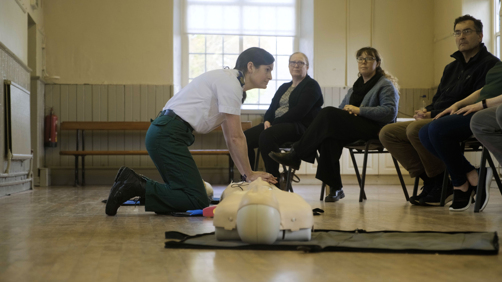

What We Do
Core Operations
The team is dispatched simultaneously with the NAS via 999/112 calls, but specifically for four types of life-threatening emergencies:
- Cardiac Arrest: Performing CPR and deploying an Automated External Defibrillator (AED).
- Chest Pain: Administering aspirin and monitoring for suspected heart attacks.
- Stroke: Conducting FAST (Face, Arms, Speech, Time) assessments.
- Choking: Clearing airways and performing basic life support.
Because the volunteers live and work locally, they can often arrive on the scene within minutes, stabilizing the patient and providing vital updates to the incoming ambulance crew.


The AED Network
The group manages and maintains a network of public access AEDs around the town. We ensure these vital pieces of equipment are functional and ready.
View AED LocationsCommunity Training
Beyond emergency response, the group acts as a local hub for emergency preparedness. They run community training sessions on basic life support, teaching the public how to perform CPR and use the public access AEDs confidently.